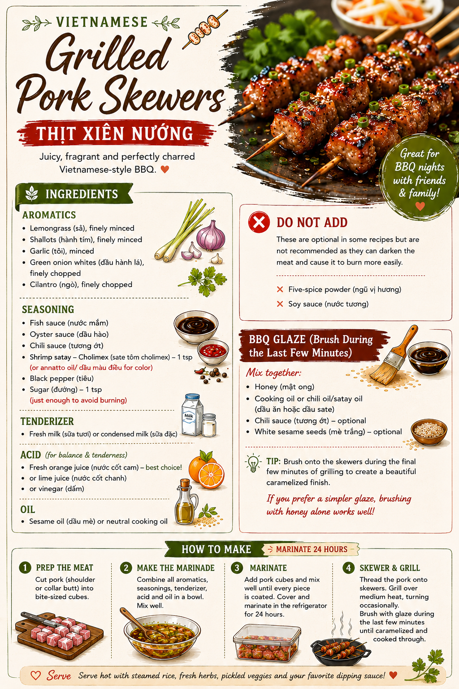

Vietnamese BBQ
Grilled Pork Skewers
Fragrant lemongrass pork with fish sauce, shallot and orange juice. Marinate for 24 hours for the best flavour.

Ingredients
- Lemongrass
- Shallots
- Garlic
- Green onion whites
- Cilantro
- Fish sauce
- 1 tsp Cholimex shrimp satay or annatto oil
- Oyster sauce
- Chili sauce
- Black pepper
- Fresh milk or condensed milk
- 1 tsp sugar
- Fresh orange juice (best), or lime juice/vinegar
- Sesame or neutral oil
Skip: five-spice powder and soy sauce.
Method
1
Mix
Finely mince the aromatics and combine with all seasonings, milk, acid and oil.
2
Marinate — 24 hours
Coat the pork thoroughly, cover and refrigerate for 24 hours.
3
Grill
Thread onto skewers and grill over medium heat, turning occasionally.
4
Glaze
Near the end, brush with honey plus cooking or satay oil. Chili sauce and sesame seeds are optional.
Công thức tiếng Việt
Thịt Xiên Nướng
Nguyên liệu
- Sả
- Hành tím
- Tỏi
- Đầu hành lá
- Ngò
- Nước mắm
- 1 muỗng cà phê sa tế tôm Cholimex hoặc dầu màu điều
- Dầu hào
- Tương ớt
- Tiêu
- Sữa tươi hoặc sữa đặc
- 1 muỗng cà phê đường
- Nước cốt cam (ngon nhất), hoặc chanh/giấm
- Dầu mè hoặc dầu ăn
Không cho: ngũ vị hương và nước tương.
Cách làm
1. Băm nhuyễn phần thơm và trộn cùng toàn bộ gia vị, sữa, nước cốt và dầu.
2. Trộn thịt thật đều với sốt, đậy kín và để tủ lạnh đủ 24 giờ.
3. Xiên thịt và nướng lửa vừa, trở đều các mặt.
4. Gần chín, quét mật ong cùng dầu ăn hoặc dầu sa tế. Có thể thêm tương ớt và mè trắng.